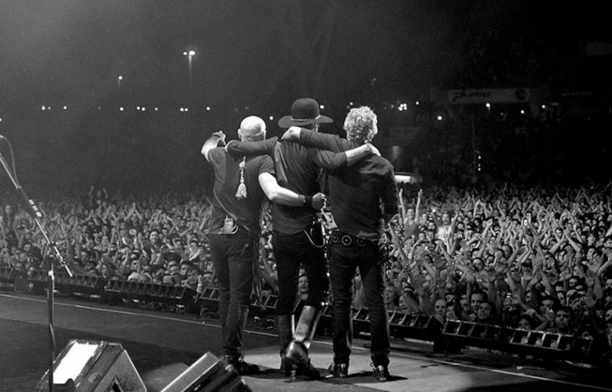

Gracias por venir
Gira "Me Verás Volver" (2007)

En el año 2007, se produjo uno de los sucesos más importantes de la música latinoamericana. Tras 10 años de su separación, la banda de rock argentina Soda Stereo anunció su vuelta a los escenarios con una serie de shows a lo largo de casi toda América en los meses de octubre a noviembre.
Con Gustavo Cerati a la cabeza, la banda dio inicio a la gira con una triple fecha en el Estadio de River Plate (19, 20 y 21 de octubre). Todo continuó días más tarde en Santiago de Chile, con una fugaz presentación en Guayaquil, Ecuador. En los primeros instantes de noviembre, la banda regresó a Buenos Aires para presentarse nuevamente en Núñez.
El 9 de noviembre le llegó el turno a México, con dos presentación en la Ciudad de México, una en Monterrey y otra en Guaradalajara. El 27 del mismo mes, llegaron a Los Ángeles para hacer vibrar a 27 mil personas. Luego tuvieron la oportunidad de compartir su esplendorosa gira en Bogotá, Colombia, en la capital panameña y en Caracas, Venezuela.
De Música Ligera (En Vivo, Estadio River Plate, 2007)
En diciembre volvieron a Estados Unidos, pero esta vez al American Airlines Arena, de Miami. El 8 y 9 dieron un doble show en Lima, Perú. Y la gira llegó a su fin con el retorno a sus tierras primitivas. Primero en Córdoba, en el Chateu Carrera y luego, dónde todo comenzó, en el Estadio de River Plate. En consecuencia, el 21 de diciembre del 2007 y ante casi 70 mil espectadores, Soda Stereo brindó su último concierto en vivo y en directo para todos sus fánaticos.

{kind=link}